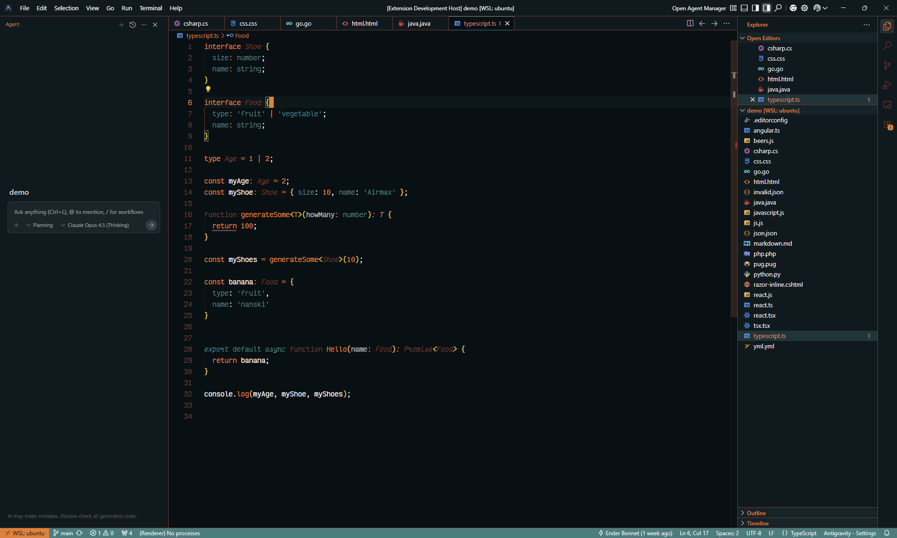

Where Warmth Meets Focus.
A vibrant VS Code theme that wraps your editor in warm orange accents, balanced by cool teal undertones — crafted for long, comfortable coding sessions.

Features
Four Variants
Choose from Dark and Light themes, each available with hard rust-brown borders or soft teal-tinted borders. Switch between them effortlessly to match your mood and lighting.
Semantic Highlighting
Full semantic token support across 13+ languages including TypeScript, JavaScript, React, Python, C#, PHP, CSS, and more. See all language scoping fixes.
Eye Comfort
Deep blue-black backgrounds (#051014), carefully tuned contrast ratios, and warm accent colors create a soothing visual experience for hours of coding without eye strain.